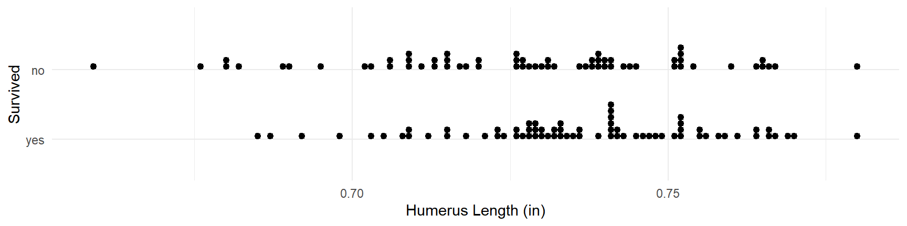
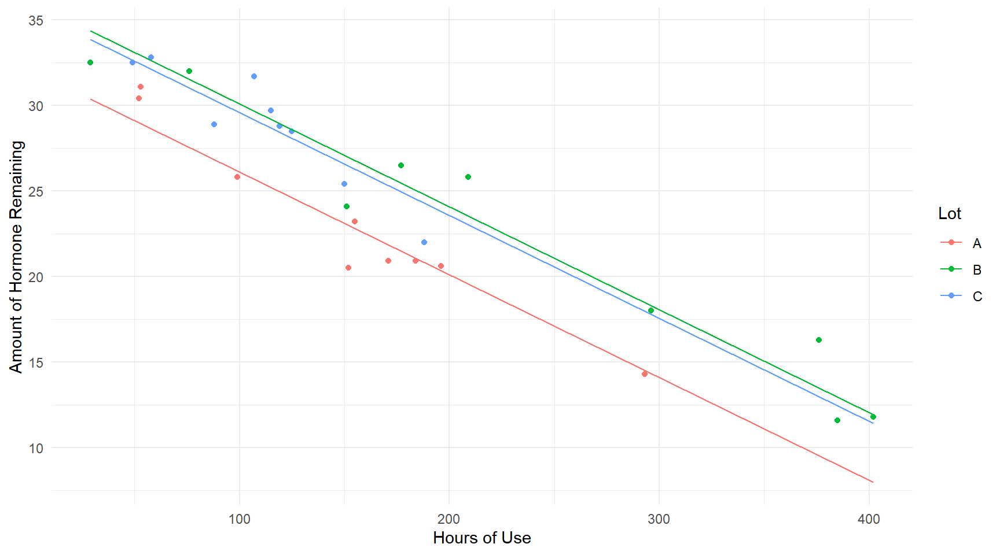
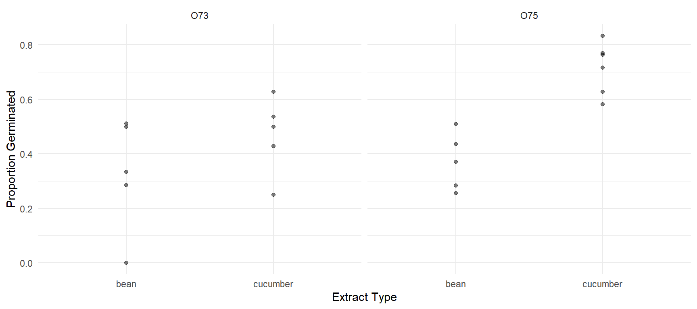

Linear Model Specification and Interpretation
Statistics 516, Homework 1 (Solutions)
You can also download a PDF copy of this homework assignment.
This homework assignment concerns specifying and the interpreting (via inference) linear models using data from several studies. In particular, you will see how to make inferences concerning linear combinations of model parameters. You will likely need to install several packages to access the data. These include the bootstrap and agridat packages, as well as the trtools and ggplot2 packages which you should have already installed.
Bumpus’ Sparrows
A famous lecture by biologist Hermon Bumpus demonstrated natural selection using data concerning the survival of house sparrows (Passer domesticus) after a severe winter storm.1 After the storm, moribund sparrows were brought to the Anatomical Laboratory at Brown University. Some of these sparrows were revived, but many died. All of the sparrows that were brought in were examined with respect to a variety of anatomical characteristics. It is interesting to compare the anatomical characteristics of sparrows that survived versus those that did not. Dot plots showing the distributions of humerus (upper wing bone) length in the samples of sparrows that survived and the sparrows that did not are shown below.2
library(trtools)
library(ggplot2)
bumpus$survived <- factor(bumpus$survival,
levels = c(TRUE,FALSE), labels = c("yes","no"))
p <- ggplot(bumpus, aes(x = survived, y = humerus)) + theme_minimal() +
geom_dotplot(binaxis = "y", binwidth = 0.001) + coord_flip() +
labs(x = "Survived", y = "Humerus Length (in)")
plot(p) Note that I created a new variable survived from the survival variable. This is not necessary, and you could use the original survival variable. I did it to change the labels to “yes” and “no”.3 The following code shows how you can use the dplyr package to compute the sample means, standard deviations, and sizes for the two samples of sparrows.4
library(dplyr)
bumpus %>% group_by(survived) %>%
summarize(ybar = mean(humerus), sd = sd(humerus), n = n())# A tibble: 2 x 4
survived ybar sd n
<fct> <dbl> <dbl> <int>
1 yes 0.736 0.0203 72
2 no 0.727 0.0252 64So the sample means for the observations of non-surviving and surviving sparrows are \(\bar{y}_n\) = 0.727 and \(\bar{y}_y\) = 0.736, respectively, the sample standard deviations are \(s_n\) = 0.0252 and \(s_y\) = 0.0203, respectively, and the sample sizes are \(n_n\) = 64 and \(n_y\) = 72, respectively. Note that the sample means and standard deviations are rounded.5 Let \(\mu_n\) and \(\mu_y\) be the “population means” for humerus length for non-surviving and surviving sparrows, respectively, or what we would call the expected humerus lengths.6 In an introductory statistics course you learned a variety of ways to make inferences using data like these. You learned how to compute a confidence interval for \(\mu_y - \mu_n\) such as \[ \bar{y}_y - \bar{y}_n \pm ts_p\sqrt{1/n_y + 1/n_n}, \] where \[ s_p = \sqrt{\frac{(n_y-1)s_y^2 + (n_n-1)s_n^2}{n_y + n_n - 2}}, \] is the “pooled” estimate of \(\sigma\), the standard deviation of humerus length, and \(t\) is a value from the t-distribution with \(n_y + n_n - 2\) degrees of freedom that is used to specify the confidence level.7 The test statistic for a “t-test” of the null hypothesis that \(\mu_y - \mu_n\) = 0 (i.e, \(\mu_y = \mu_n\)) is \[ t = \frac{\bar{y}_y - \bar{y}_n}{s_p\sqrt{1/n_y + 1/n_n}}. \] If you were to compute the confidence interval and test statistic using the formulas above you would get a confidence interval (with a 95% confidence level) for \(\mu_y - \mu_n\) of approximately (0.001 in, 0.016 in) and a test statistic for the null hypothesis \(\mu_y - \mu_n\) = 0 of approximately t = 2.175. Here you will see how to make these inferences and others using a linear model.
Estimate a linear model using the
lmfunction with humerus length as the response variable and survival as the explanatory variable. Report the parameter estimates and their standard errors using thesummaryfunction.Solution: We can estimate the model and produce the parameter estimates and standard errors as follows.
m <- lm(humerus ~ survived, data = bumpus) summary(m)$coefficientsEstimate Std. Error t value Pr(>|t|) (Intercept) 0.735944 0.002683 274.302 3.798e-186 survivedno -0.008507 0.003911 -2.175 3.138e-02The model you estimated in the previous problem can be written as \[ E(Y_i) = \beta_0 + \beta_1 x_i, \] where \(Y_i\) is the \(i\)-th observation of humerus length. Explain how the value of \(x_i\) is defined for this model (i.e., how would you determine the value of \(x_i\) for a given sparrow?). Write the model case-wise to express the expected humerus length as a function of \(\beta_0\) and \(\beta_1\) for sparrows that survived and those that did not. Let \(\mu_y\) and \(\mu_n\) be the expected humerus length of a sparrow that did and did not survive, respectively. Using the case-wise representation of the model, write each of these parameters as a function of \(\beta_0\) and/or \(\beta_1\) (i.e., how would you compute \(\mu_y\) and \(\mu_n\) using \(\beta_0\) and \(\beta_1\)?).
Solution: We can see from
summarythat \(x_i\) is an indicator variable defined as \(x_i\) = 1 if the \(i\)-th observation is of a non-surviving sparrow, and \(x_i\) = 0 otherwise. Thus the model can be written case-wise as \[ E(Y_i) = \begin{cases} \beta_0, & \text{if the $i$-th observation is of a surviving sparrow}, \\ \beta_0 + \beta_1, & \text{if the $i$-th observation is of a non-surviving sparrow}. \end{cases} \] Thus we have that \(\mu_y = \beta_0\) and \(\mu_n = \beta_0 + \beta_1\). It is important to note that if the variablesurvivalis used instead ofsurvivedas the explanatory variable that the indicator variable will then be one when survival isTRUE, which reverses the definitions of \(\mu_y\) and \(\mu_n\) in terms of the parameters. But the inferences (if done correctly) will be the same.Using the
linconandcontrastfunctions, produce estimates, standard errors, and confidence intervals for \(\mu_y\) and \(\mu_n\). For thelinconfunction, use the fact that each of these parameters can be written as a function of \(\beta_0\) and/or \(\beta_1\). Note that the results fromlinconandcontrastshould be the same.8Solution: We can obtain inferences for \(\mu_y\) and \(\mu_n\) using
linconas follows.library(trtools) lincon(m, a = c(1,0)) # survivingestimate se lower upper tvalue df pvalue (1,0),0 0.7359 0.002683 0.7306 0.7413 274.3 134 3.798e-186lincon(m, a = c(1,1)) # non-survivingestimate se lower upper tvalue df pvalue (1,1),0 0.7274 0.002846 0.7218 0.7331 255.6 134 4.738e-182The same inferences can be obtained using
contrastas follows.trtools::contrast(m, a = list(survived = c("yes","no")), cnames = c("yes","no"))estimate se lower upper tvalue df pvalue yes 0.7359 0.002683 0.7306 0.7413 274.3 134 3.798e-186 no 0.7274 0.002846 0.7218 0.7331 255.6 134 4.738e-182Note that I am going to use
trtools::contrastin these solutions because I will also be using the emmeans package. Here are how we can obtain these inferences using the emmeans package.library(emmeans) emmeans(m, ~ survived)survived emmean SE df lower.CL upper.CL yes 0.736 0.00268 134 0.731 0.741 no 0.727 0.00285 134 0.722 0.733 Confidence level used: 0.95Using the
linconandcontrastfunctions, produce an estimate, standard error, and confidence interval for \(\mu_y - \mu_n\), as well as the test statistic and p-value for a test of the null hypothesis that \(\mu_y - \mu_n\) = 0. Note that the results fromlinconandcontrastshould be the same. Also note that your confidence interval and test statistic should be the same as those shown in the problem description above.Solution: Here are the inferences using
linconandcontrast. Note that \(\mu_y - \mu_n = \beta_0 - (\beta_0 + \beta_1) = -\beta_1\).lincon(m, a = c(0,-1))estimate se lower upper tvalue df pvalue (0,-1),0 0.008507 0.003911 0.0007715 0.01624 2.175 134 0.03138trtools::contrast(m, a = list(survived = "yes"), b = list(survived = "no"))estimate se lower upper tvalue df pvalue 0.008507 0.003911 0.0007715 0.01624 2.175 134 0.03138And here is how it can be done using the emmeans package.
pairs(emmeans(m, ~ survived), infer = TRUE)contrast estimate SE df lower.CL upper.CL t.ratio p.value yes - no 0.00851 0.00391 134 0.000772 0.0162 2.175 0.0314 Confidence level used: 0.95Note that the confidence interval and test statistic are the same as those given using the formulas given in the problem description.
Anti-Inflammatory Hormone Devices
For this problem you will be using the data frame hormone from the bootstrap package. The data are from a fictional study of devices for delivering anti-inflammatory hormones. The primary goal of the study is compare devices from three different manufacturing lots with respect to the amount of hormone remaining in the devices after use. The plot below shows the distribution of hormone remaining for the devices from the three lots.
library(bootstrap)
library(ggplot2)
p <- ggplot(hormone, aes(x = Lot, y = amount)) + theme_minimal() +
geom_point(alpha = 0.5) + coord_flip() + labs(y = "Amount Remaining")
plot(p) The following shows the mean for amount remaining by lot.
The following shows the mean for amount remaining by lot.
library(dplyr)
hormone %>% group_by(Lot) %>% summarize(ybar = mean(amount))# A tibble: 3 x 2
Lot ybar
<chr> <dbl>
1 A 23.1
2 B 22.1
3 C 28.9The goal here is to make inferences about the expected amount of hormone remaining for devices from the three manufacturing lots.
Estimate a linear model using the
lmfunction where the response variable is the amount of hormone remaining and the explanatory variable is lot. Report the parameter estimates and standard errors using thesummaryfunction.Solution: This model can be estimated as follows.
m <- lm(amount ~ Lot, data = hormone) summary(m)$coefficientsEstimate Std. Error t value Pr(>|t|) (Intercept) 23.078 1.962 11.7630 1.887e-11 LotB -1.011 2.775 -0.3644 7.187e-01 LotC 5.844 2.775 2.1065 4.581e-02The model you estimated in the previous problem can be written as \[ E(Y_i) = \beta_0 + \beta_1x_{i1} + \beta_2x_{i2}, \] where \(Y_i\) is the \(i\)-th observation of the amount of hormone remaining. Explain how \(x_{i1}\) and \(x_{i2}\) are defined for this model (i.e., how would you determine their values for a given device?). Then write the model case-wise to show how the expected amount of hormone remaining for each lot can be written as a function of \(\beta_0\), \(\beta_1\), and/or \(\beta_2\).
Solution: Inspection of the output from
summaryshows that \(x_{i1}\) = 1 if the \(i\)-th observation is from Lot B, and \(x_{i1}\) = 0 otherwise, and \(x_{i2}\) = 1 if the \(i\)-th observation is from Lot C, and \(x_{i2}\) = 0 otherwise. So the model can be written case-wise as \[ E(Y_i) = \begin{cases} \beta_0, & \text{if the $i$-th observation is from lot A}, \\ \beta_0 + \beta_1, & \text{if the $i$-th observation is from lot B}, \\ \beta_0 + \beta_2, & \text{if the $i$-th observation is from lot C}. \end{cases} \]Using the
contrastandlinconfunctions, produce estimates, standard errors, and confidence intervals for the expected amount of hormone remaining for each lot. Note that the results fromlinconandcontrastshould be the same.Solution: The inferences can be obtained using
linconandcontrastas follows.lincon(m, a = c(1,0,0)) # lot Aestimate se lower upper tvalue df pvalue (1,0,0),0 23.08 1.962 19.03 27.13 11.76 24 1.887e-11lincon(m, a = c(1,1,0)) # lot Bestimate se lower upper tvalue df pvalue (1,1,0),0 22.07 1.962 18.02 26.12 11.25 24 4.717e-11lincon(m, a = c(1,0,1)) # lot Cestimate se lower upper tvalue df pvalue (1,0,1),0 28.92 1.962 24.87 32.97 14.74 24 1.583e-13trtools::contrast(m, a = list(Lot = c("A","B","C")), cnames = c("Lot A","Lot B","Lot C"))estimate se lower upper tvalue df pvalue Lot A 23.08 1.962 19.03 27.13 11.76 24 1.887e-11 Lot B 22.07 1.962 18.02 26.12 11.25 24 4.717e-11 Lot C 28.92 1.962 24.87 32.97 14.74 24 1.583e-13Here is how this can be done using the emmeans package.
emmeans(m, ~ Lot)Lot emmean SE df lower.CL upper.CL A 23.1 1.96 24 19.0 27.1 B 22.1 1.96 24 18.0 26.1 C 28.9 1.96 24 24.9 33.0 Confidence level used: 0.95Using the
contrastandlinconfunctions, produce estimates, standard errors, and confidence intervals for the difference in the expected amount of hormone remaining between lot C and B, lots C and A, and between lots A and B. Note that the results fromlinconandcontrastshould be the same.Solution: Note that the difference in the expected response between lots C and B is \(\beta_0 + \beta_2 - (\beta_0 - \beta_1) = \beta_2 - \beta_1\), the difference in the expected response between lots C and A is \(\beta_0 + \beta_2 - \beta_0 = \beta_2\), and the difference in the expected response between lots A and B is \(\beta_0 - (\beta_0 + \beta_1) = -\beta_1\). We can estimate these differences using
linconas follows.lincon(m, a = c(0,-1,1)) # beta2 - beta1estimate se lower upper tvalue df pvalue (0,-1,1),0 6.856 2.775 1.129 12.58 2.471 24 0.02097lincon(m, a = c(0,0,1)) # beta2estimate se lower upper tvalue df pvalue (0,0,1),0 5.844 2.775 0.1181 11.57 2.106 24 0.04581lincon(m, a = c(0,-1,0)) # -beta1estimate se lower upper tvalue df pvalue (0,-1,0),0 1.011 2.775 -4.715 6.737 0.3644 24 0.7187Here is how we can make these inferences using
contrast. Note that we can do it in one statement.trtools::contrast(m, a = list(Lot = c("C","C","A")), b = list(Lot = c("B","A","B")), cnames = c("C vs B","C vs A","A vs B"))estimate se lower upper tvalue df pvalue C vs B 6.856 2.775 1.1292 12.582 2.4709 24 0.02097 C vs A 5.844 2.775 0.1181 11.571 2.1065 24 0.04581 A vs B 1.011 2.775 -4.7153 6.737 0.3644 24 0.71873We can also do this using the
pairsfunction in the emmeans package as follows.pairs(emmeans(m, ~Lot), infer = TRUE, adjust = "none")contrast estimate SE df lower.CL upper.CL t.ratio p.value A - B 1.01 2.77 24 -4.71 6.737 0.364 0.7187 A - C -5.84 2.77 24 -11.57 -0.118 -2.106 0.0458 B - C -6.86 2.77 24 -12.58 -1.129 -2.471 0.0210 Confidence level used: 0.95Note that the direction of subtraction is different when using
pairs. By default it appears to use the order of the categories/levels (alphabetical if not specified otherwise). But you can reverse the direction of subtraction using thereverse = TRUEargument.pairs(emmeans(m, ~Lot), infer = TRUE, adjust = "none", reverse = TRUE)contrast estimate SE df lower.CL upper.CL t.ratio p.value B - A -1.01 2.77 24 -6.737 4.71 -0.364 0.7187 C - A 5.84 2.77 24 0.118 11.57 2.106 0.0458 C - B 6.86 2.77 24 1.129 12.58 2.471 0.0210 Confidence level used: 0.95The model and analyses in the previous problems fails to take into account that devices in the three lots tended to have different amounts of use as can be seen in the following.
p <- ggplot(hormone, aes(x = Lot, y = hrs)) + theme_minimal() + geom_point(alpha = 0.5) + coord_flip() + labs(y = "Hours of Use") plot(p)
hormone %>% group_by(Lot) %>% summarize(wear = mean(hrs))# A tibble: 3 x 2 Lot wear <chr> <dbl> 1 A 151. 2 B 233. 3 C 111As can be seen in the plot and in the descriptive statistics, the devices from lot C had, on average, the least hours of use, while devices from lot B tended to have the most hours of use. We can view the relationship among all three variables in the following plot.
p <- ggplot(hormone, aes(x = hrs, y = amount, color = Lot)) + theme_minimal() + geom_point() + labs(x = "Hours of Use", y = "Amount of Hormone Remaining") plot(p) There is nothing statistically incorrect about the model used in the previous problem, but it may not be useful since it does not allow for a “fair” comparison between the lots since the devices in the lots differ across lots with respect to use. A more useful comparison would be to compare the expected amount of hormone between the lots while “controlling for” hours of use — i.e., what is the difference in the expected amount of hormone for devices from different lots but with the same amount of use? Estimate a linear model with amount of hormone remaining as a response variable and both lot and hours of use as explanatory variables. Do not include an “interaction” term in your model so that the rate of change in expected amount of hormone with respect to amount of use is the same for each lot. Report the parameter estimates and their standard errors using the
There is nothing statistically incorrect about the model used in the previous problem, but it may not be useful since it does not allow for a “fair” comparison between the lots since the devices in the lots differ across lots with respect to use. A more useful comparison would be to compare the expected amount of hormone between the lots while “controlling for” hours of use — i.e., what is the difference in the expected amount of hormone for devices from different lots but with the same amount of use? Estimate a linear model with amount of hormone remaining as a response variable and both lot and hours of use as explanatory variables. Do not include an “interaction” term in your model so that the rate of change in expected amount of hormone with respect to amount of use is the same for each lot. Report the parameter estimates and their standard errors using the summaryfunction, parameter confidence intervals using theconfintfunction, and plot the estimated expected amount of hormone remaining as a function of hours of use and lot by extending the code given above. Note that this will require you to create an artificial data set using theexpand.gridfunction for different combinations of hours of use and lots. For the hours of use variable, have your values go from 29 to 402 hours, which are the smallest and largest values observed in the data.Solution: Here is how to specify the model and produce parameter estimates with confidence intervals.
m <- lm(amount ~ Lot + hrs, data = hormone) cbind(summary(m)$coefficients, confint(m))Estimate Std. Error t value Pr(>|t|) 2.5 % 97.5 % (Intercept) 32.13159 0.748277 42.941 1.823e-23 30.58367 33.67952 LotB 3.97350 0.809686 4.907 5.868e-05 2.29854 5.64846 LotC 3.46573 0.769123 4.506 1.594e-04 1.87468 5.05678 hrs -0.06014 0.003474 -17.310 1.099e-14 -0.06732 -0.05295Next we can create a data frame for plotting purposes.
d <- expand.grid(Lot = c("A","B","C"), hrs = c(29,402)) d$yhat <- predict(m, newdata = d)Finally we can “add” the estimated model to the plot.
p <- p + geom_line(aes(y = yhat), data = d) plot(p)
The model you estimated in the previous problem can be written as \[ E(Y_i) = \beta_0 + \beta_1x_{i1} + \beta_2x_{i2} + \beta_3x_{i3}. \] Explain how \(x_{i1}\), \(x_{i2}\), and \(x_{i3}\) are defined (i.e., how would you determine their values for a given device). Then write the model case-wise to show how the expected amount of hormone remaining can be written as a function of \(\beta_0\), \(\beta_1\), \(\beta_2\), \(\beta_3\), and hours of use for each lot.
Solution: The variables \(x_{i1}\) and \(x_{i2}\) are defined as they were in the previous model. They are indicator variables for lots B and C, respectively. Then \(x_{i3}\) is simply hours of use for the \(i\)-th observation. The model can be written case-wise as \[ E(Y_i) = \begin{cases} \beta_0, & \text{if the $i$-th observation is from lot A}, \\ \beta_0 + \beta_1, & \text{if the $i$-th observation is from lot B}, \\ \beta_0 + \beta_2, & \text{if the $i$-th observation is from lot C}. \end{cases} \]
Use the
contrastfunction to estimate (a) the expected amount of hormone remaining in a device from each of the three lots that has had 200 hours of use, and (b) the difference in the expected amount of hormone remaining between lot C and B, lots C and A, and between lots A and B, when the hours of use is 200 hours. Comment briefly on how your comparisons between the lots in (b) compare to what you found earlier when you did not control for hours of use.Solution: Here are the estimated expected amount of hormone remaining for a device from each lot after 200 hours of use.
trtools::contrast(m, a = list(Lot = c("A","B","C"), hrs = 200), cnames = c("A","B","C"))estimate se lower upper tvalue df pvalue A 20.10 0.5620 18.94 21.27 35.77 23 1.146e-21 B 24.08 0.5476 22.95 25.21 43.97 23 1.063e-23 C 23.57 0.6180 22.29 24.85 38.14 23 2.689e-22And here are the pairwise differences.
trtools::contrast(m, a = list(Lot = c("C","C","A"), hrs = 200), b = list(Lot = c("B","A","B"), hrs = 200), cnames = c("C vs B","C vs A","A vs B"))estimate se lower upper tvalue df pvalue C vs B -0.5078 0.8681 -2.304 1.288 -0.5849 23 5.643e-01 C vs A 3.4657 0.7691 1.875 5.057 4.5061 23 1.594e-04 A vs B -3.9735 0.8097 -5.648 -2.299 -4.9075 23 5.868e-05We can also do this with the emmeans package by using the
atargument to specify the value of hours of use.emmeans(m, ~Lot, at = list(hrs = 200))Lot emmean SE df lower.CL upper.CL A 20.1 0.562 23 18.9 21.3 B 24.1 0.548 23 22.9 25.2 C 23.6 0.618 23 22.3 24.8 Confidence level used: 0.95pairs(emmeans(m, ~Lot, at = list(hrs = 200)), infer = TRUE, adjust = "none")contrast estimate SE df lower.CL upper.CL t.ratio p.value A - B -3.973 0.810 23 -5.65 -2.30 -4.907 0.0001 A - C -3.466 0.769 23 -5.06 -1.87 -4.506 0.0002 B - C 0.508 0.868 23 -1.29 2.30 0.585 0.5643 Confidence level used: 0.95In the model used in the previous questions with hours of use as an explanatory variable with lot, one of the \(\beta_j\) parameters in the model is the rate of change in the expected amount of hormone remaining with respect to hours of use (i.e., the change in the expected amount of hormone remaining for a one hour increase in use). Because of how the model was specified, this is the same for the three lots. Now use the
contrastfunction to estimate this same quantity for each lot. You should obtain the same estimate, standard error, confidence interval, and test statistic as for the corresponding \(\beta_j\) parameter as shown bysummaryandconfint, and these should be the same for each lot. Also use thecontrastfunction to estimate the change in the expected amount of hormone remaining for a 100 hour increase in use. Note that your estimate, standard error, and confidence interval endpoints should be 100 times what you found for a one hour increase, but the test statistic should be the same.Solution: In this model \(\beta_3\) is the rate of change in the expected amount of hormone remaining per hour of use. We can also estimate this using
contrastas follows.trtools::contrast(m, a = list(Lot = c("A","B","C"), hrs = 2), b = list(Lot = c("A","B","C"), hrs = 1), cnames = c("A","B","C"))estimate se lower upper tvalue df pvalue A -0.06014 0.003474 -0.06732 -0.05295 -17.31 23 1.099e-14 B -0.06014 0.003474 -0.06732 -0.05295 -17.31 23 1.099e-14 C -0.06014 0.003474 -0.06732 -0.05295 -17.31 23 1.099e-14The rate of change can also be estimated using the
emtrendsfunction from the emmeans package.emtrends(m, ~Lot, var = "hrs")Lot hrs.trend SE df lower.CL upper.CL A -0.0601 0.00347 23 -0.0673 -0.0529 B -0.0601 0.00347 23 -0.0673 -0.0529 C -0.0601 0.00347 23 -0.0673 -0.0529 Confidence level used: 0.95For a 100 hour increase we can estimate the rate of change as follows.
trtools::contrast(m, a = list(Lot = c("A","B","C"), hrs = 200), b = list(Lot = c("A","B","C"), hrs = 100), cnames = c("A","B","C"))estimate se lower upper tvalue df pvalue A -6.014 0.3474 -6.732 -5.295 -17.31 23 1.099e-14 B -6.014 0.3474 -6.732 -5.295 -17.31 23 1.099e-14 C -6.014 0.3474 -6.732 -5.295 -17.31 23 1.099e-14Consider the following model “formula” argument for the
lmfunction:amount ~ Lot:hrs. It may not be clear exactly what kind of model this specifies, but you can deduce the model from the output fromsummary. Estimate this model and give the parameter estimates and their standard errors using thesummaryfunction. Also plot the model with the raw data like you did with the previous model. This model can be written as \[ E(Y_i) = \beta_0 + \beta_1x_{i1} + \beta_2x_{i2} + \beta_3x_{i3}, \] but now \(x_{i1}\), \(x_{i2}\), and \(x_{i3}\) are different from what they were in the previous model, and so \(\beta_0\), \(\beta_1\), \(\beta_2\), and \(\beta_3\) have different interpretations as well. Explain how \(x_{i1}\), \(x_{i2}\), and \(x_{i3}\) are defined for this model (i.e., how would you determine their values for a given device). Write the model case-wise to show how the expected amount of hormone remaining can be written as a function of \(\beta_0\), \(\beta_1\), \(\beta_2\), \(\beta_3\), and hours of use for each lot. Use thecontrastfunction to estimate (a) the expected amount of hormone remaining in devices from each lot after zero hours of use, and after 200 hours of use, and (b) the change in the expected amount of hormone for a one hour increase in the amount of use for each lot. Compare these estimates to the parameter estimates fromsummary, and briefly discuss how one would interpret the parameters \(\beta_0\), \(\beta_1\), \(\beta_2\), and \(\beta_3\) in terms of the relationship between expected hormone remaining as a function of lot and hours of use. Note: This problem is extra credit for students enrolled in Stat 436, but is required for students enrolled in Stat 516.Solution: Here are the parameter estimates.
m <- lm(amount ~ Lot:hrs, data = hormone) summary(m)$coefficientsEstimate Std. Error t value Pr(>|t|) (Intercept) 35.01572 0.736247 47.560 1.783e-24 LotA:hrs -0.07728 0.005146 -15.016 2.238e-13 LotB:hrs -0.05566 0.003142 -17.714 6.696e-15 LotC:hrs -0.05722 0.007423 -7.709 8.045e-08According to the output, \(x_{i1}\) is the product of an indicator variable for an observation from lot A and the hours of use. Similarly \(x_{i2}\) and \(x_{i3}\) are the products of indicator variables for lots B and C, respectively, and hours of use. So the model can be written case-wise as \[ E(Y_i) = \begin{cases} \beta_0 + \beta_1 h_i, & \text{if the $i$-th observation is from lot A}, \\ \beta_0 + \beta_2 h_i, & \text{if the $i$-th observation is from lot B}, \\ \beta_0 + \beta_3 h_i, & \text{if the $i$-th observation is from lot C}. \\ \end{cases} \] Using contrast we can estimate the expected amount of hormone remaining for each lot after 0 and 100 hours of use.
trtools::contrast(m, a = list(Lot = c("A","B","C"), hrs = 0), cnames = c("A","B","C"))estimate se lower upper tvalue df pvalue A 35.02 0.7362 33.49 36.54 47.56 23 1.783e-24 B 35.02 0.7362 33.49 36.54 47.56 23 1.783e-24 C 35.02 0.7362 33.49 36.54 47.56 23 1.783e-24trtools::contrast(m, a = list(Lot = c("A","B","C"), hrs = 100), cnames = c("A","B","C"))estimate se lower upper tvalue df pvalue A 27.29 0.4678 26.32 28.26 58.33 23 1.692e-26 B 29.45 0.5354 28.34 30.56 55.00 23 6.481e-26 C 29.29 0.4819 28.30 30.29 60.79 23 6.576e-27Here is how we could do that with the emmeans package.
emmeans(m, ~Lot, at = list(hrs = 0))Lot emmean SE df lower.CL upper.CL A 35 0.736 23 33.5 36.5 B 35 0.736 23 33.5 36.5 C 35 0.736 23 33.5 36.5 Confidence level used: 0.95emmeans(m, ~Lot, at = list(hrs = 100))Lot emmean SE df lower.CL upper.CL A 27.3 0.468 23 26.3 28.3 B 29.4 0.535 23 28.3 30.6 C 29.3 0.482 23 28.3 30.3 Confidence level used: 0.95Note that the estimated expected response at zero hours is the same for all three lots, and these are also equal to the estimate for \(\beta_0\). In this model \(\beta_0\) represents the expected amount of hormone remaining at zero hours for all three lots. Assuming that the devices from the three lots start with the same amount of hormone, on average, and that any differences are due to measurement error or random differences in how the devices are filled that do not systematically vary between lots, such a model may be reasonable. Now consider the estimates of the change in the expected amount of hormone remaining after one additional hour of use for each lot.
trtools::contrast(m, a = list(Lot = c("A","B","C"), hrs = 2), b = list(Lot = c("A","B","C"), hrs = 1), cnames = c("A","B","C"))estimate se lower upper tvalue df pvalue A -0.07728 0.005146 -0.08792 -0.06663 -15.016 23 2.238e-13 B -0.05566 0.003142 -0.06216 -0.04916 -17.714 23 6.696e-15 C -0.05722 0.007423 -0.07258 -0.04187 -7.709 23 8.045e-08We can also do this using the
emtrendsfunction from the emmeans package.emtrends(m, ~Lot, var = "hrs")Lot hrs.trend SE df lower.CL upper.CL A -0.0773 0.00515 23 -0.0879 -0.0666 B -0.0557 0.00314 23 -0.0622 -0.0492 C -0.0572 0.00742 23 -0.0726 -0.0419 Confidence level used: 0.95Note that these estimates are the same as those for \(\beta_1\), \(\beta_2\), and \(\beta_3\). In this model, those parameters equal the rate of change in the expected amount of hormone remaining for devices from each lot. You can also use the
pairsfunction from the emmeans package to compare these parameters.pairs(emtrends(m, ~Lot, var = "hrs"), infer = TRUE, adjust = "none")contrast estimate SE df lower.CL upper.CL t.ratio p.value A - B -0.02161 0.00414 23 -0.0302 -0.01305 -5.219 <.0001 A - C -0.02005 0.00591 23 -0.0323 -0.00783 -3.395 0.0025 B - C 0.00156 0.00607 23 -0.0110 0.01412 0.257 0.7994 Confidence level used: 0.95So we can see, for example, that the differences in the rates of change are statistically significant when comparing lots A and B and when comparing lots A and C, but not when comparing lots B and C. The
contrastfunction can also do this, but it is a bit more tedious.
Daphnia Survey
The data in the data frame daphniastrat from the trtools package are from a survey of daphnia (water fleas) in a fresh water lake.9 Researchers obtained one-liter samples of water from three depth layers: the epilimnion (the warmer surface layer), the thermocline (the middle layer between the warmer and colder layers), and the hypolimnion (the colder bottom layer). The number of daphnia within each water sample was then recorded. A plot of the raw data is shown below.
library(ggplot2)
library(trtools)
p <- ggplot(daphniastrat, aes(x = layer, y = count)) + theme_minimal() +
geom_dotplot(binaxis = "y", stackdir = "center") +
labs(x = "Layer", y = "Number of Daphnia")
plot(p) Some descriptive statistics of the number of daphnia for each layer can be obtained as follows using the dplyr package.
Some descriptive statistics of the number of daphnia for each layer can be obtained as follows using the dplyr package.
library(dplyr)
daphniastrat %>% group_by(layer) %>%
summarize(mean = mean(count), sd = sd(count), samples = n())# A tibble: 3 x 4
layer mean sd samples
<fct> <dbl> <dbl> <int>
1 epilimnion 19.5 3.58 20
2 thermocline 11.3 4.08 10
3 hypolimnion 1.73 1.91 15The following concern inferences about the daphnia within each layer and in the entire lake.
Specify a linear model using the
lmfunction with count as the response variable and layer as the explanatory variable. Report the parameter estimates using thesummaryfunction. Let \(\mu_e\), \(\mu_t\), and \(\mu_h\) represent the expected number of daphnia in one liter of water sampled from the epilimnion, thermocline, and hypolimnion layers, respectively. If we assume simple random sampling of the one liter samples from each layer, then \(\mu_e\), \(\mu_t\), and \(\mu_h\) then also represent the mean number of daphnia for epilimnion, thermocline, and hypolimnion layers, respectively (i.e., the daphnia density in each layer). Write each of these parameters as a function of \(\beta_0\), \(\beta_1\), and/or \(\beta_2\).Solution: We can specify the model and obtain the parameter estimates as follows.
m <- lm(count ~ layer, data = daphniastrat) summary(m)$coefficientsEstimate Std. Error t value Pr(>|t|) (Intercept) 19.50 0.7271 26.820 4.727e-28 layerthermocline -8.20 1.2593 -6.512 7.293e-08 layerhypolimnion -17.77 1.1106 -15.997 1.784e-19Note that we can write the model case-wise as \[ E(Y_i) = \begin{cases} \beta_0, & \text{if the $i$-th water sample is from the epilimnion layer}, \\ \beta_0 + \beta_1, & \text{if the $i$-th water sample is from the thermocline layer}, \\ \beta_0 + \beta_1, & \text{if the $i$-th water sample is from the hypolimnion layer}. \end{cases} \] This implies that \(\mu_e = \beta_0\), \(\mu_t = \beta_0 + \beta_1\), and \(\mu_h = \beta_0 + \beta_2\).
The volumes of the epilimnion, thermocline, and hypolimnion layers are 100kL, 200kL, and 400kL, respectively, so the volume of the lake as a whole is 700kL or 700000 liters. The mean number of daphnia per liter for the whole lake, denoted here as \(\mu\), is therefore the weighted average of the mean number of daphnia per liter from each layer computed as \[ \mu = \tfrac{1}{7}\mu_e + \tfrac{2}{7}\mu_t + \tfrac{4}{7}\mu_h. \] The total number of daphnia in the lake, which we might represent as the parameter \(\tau\), is equal to 700000\(\mu\), so that \[ \tau = 100000\mu_e + 200000\mu_t + 400000\mu_h. \] In the previous problem you expressed \(\mu_e\), \(\mu_t\), and \(\mu_h\) as functions of the parameters \(\beta_0\), \(\beta_1\), and \(\beta_2\). In the expressions for \(\mu\) and \(\tau\) above, substitute \(\mu_e\), \(\mu_t\), and \(\mu_h\) with the corresponding function of \(\beta_0\), \(\beta_1\), and \(\beta_2\), and then simplify the expressions so that \(\mu\) and \(\tau\) are then written as linear combinations of \(\beta_0\), \(\beta_1\), and \(\beta_2\). Then use the
linconfunction to compute estimates of \(\mu\) and \(\tau\) as well as confidence intervals for these parameters and the standard errors of the estimators.10Solution: Note that \[ \mu = \beta_0 + \tfrac{2}{7}\beta_1 + \tfrac{4}{7}\beta_2, \] and \[ \tau = 700000\beta_0 + \tfrac{1400000}{7}\beta_1 + \tfrac{2800000}{7}\beta_2 = 700000\beta_0 + 200000\beta_1 + 400000\beta_2. \] So we can estimate \(\mu\) and \(\tau\) using
linconas follows.lincon(m, a = c(1, 2/7, 4/7))estimate se lower upper tvalue df pvalue (1,2/7,4/7),0 7.005 0.572 5.85 8.159 12.25 42 1.907e-15lincon(m, a = c(700000, 200000, 400000))estimate se lower upper tvalue df pvalue (7e+05,2e+05,4e+05),0 4903333 400431 4095230 5711437 12.25 42 1.907e-15Note that you can also have R do the multiplication for you for the coefficients for \(\tau\).
lincon(m, a = 700000 * c(1, 2/7, 4/7))estimate se lower upper tvalue df pvalue (7e+05,2e+05,4e+05),0 4903333 400431 4095230 5711437 12.25 42 1.907e-15Inferences for \(\mu\) can also be obtained using the emmeans package.
levels(daphniastrat$layer) # checking the order of the levels[1] "epilimnion" "thermocline" "hypolimnion"emmeans(m, ~1, weights = c(1/7, 2/7, 4/7))1 emmean SE df lower.CL upper.CL overall 7 0.572 42 5.85 8.16 Results are averaged over the levels of: layer Confidence level used: 0.95We cannot use this approach to estimate \(\tau\) because the
weightsargument for theemmeansfunction will normalize the weights so that they sum to one. But since \(\tau = 700000\mu\) you could obtain these inferences “by hand” by multiplying the estimate, standard error, and confidence interval limits by 700000. Thecontrastfunction from the trtools package will also allow you to make inferences concerning \(\mu\) and \(\tau\) by specifying a transformation function to take the estimates of \(\mu_e\), \(\mu_t\), and \(\mu_h\). This requires a little bit of R programming.f <- function(mu) { 1/7 * mu[1] + 2/7 * mu[2] + 4/7 * mu[3] } trtools::contrast(m, a = list(layer = c("epilimnion","thermocline","hypolimnion")), tf = f)estimate se lower upper tvalue df pvalue 7.005 0.572 5.85 8.159 12.25 42 1.907e-15Here the argument
tfallows me to specify a “transformation function” to make inferences about a function of whatevercontrastwould produce (here the estimated expected number of daphnia for each layer). This is maybe a little easier than usinglincon, but more work than usingemmeans. A benefit of usingcontrastlike this is that it is fairly powerful since the user can specify other kinds of transformation functions.In the previous problem you estimated the total number of daphnia in the lake. Now consider the problem of estimating the total number of daphnia in each layer. The total number of daphnia in the epilimnion layer is \(\tau_e\) = 100000\(\mu_e\). Similarly, the total number of daphnia in the thermocline and hypolimnion layers are \(\tau_t\) = 200000\(\mu_t\) and \(\tau_h\) = 400000\(\mu_h\), respectively. Write \(\tau_e\), \(\tau_t\), and \(\tau_h\) as linear combinations of \(\beta_0\), \(\beta_1\), and \(\beta_2\), and use the
linconfunction produce an estimate, standard error, and confidence interval for each parameter.Solution: From above we have that \(\tau_e\) = 100000\(\beta_0\), \(\tau_t\) = 200000\(\beta_0\) + 200000\(\beta_1\), and \(\tau_h\) = 400000\(\beta_0\) + 400000\(\beta_2\). These can be estimated as follows.
lincon(m, a = c(100000, 0, 0))estimate se lower upper tvalue df pvalue (1e+05,0,0),0 1950000 72706 1803274 2096726 26.82 42 4.727e-28lincon(m, a = c(200000, 200000, 0))estimate se lower upper tvalue df pvalue (2e+05,2e+05,0),0 2260000 205643 1844996 2675004 10.99 42 6.221e-14lincon(m, a = c(400000, 0, 400000))estimate se lower upper tvalue df pvalue (4e+05,0,4e+05),0 693333 335813 15635 1371031 2.065 42 0.04517This can also be done using
contrastby programming a transformation function.f <- function(mu) { c(100000*mu[1], 200000*mu[2], 400000*mu[3]) } trtools::contrast(m, a = list(layer = c("epilimnion","thermocline","hypolimnion")), tf = f, delta = TRUE)estimate se lower upper tvalue df pvalue 1950000 72706 1803274 2096726 26.820 42 4.727e-28 2260000 205643 1844996 2675004 10.990 42 6.221e-14 693333 335813 15635 1371031 2.065 42 4.517e-02The
delta = TRUEargument here is required here for a technical reason to overcome a limitation of thecontrastfunction to understand certain kinds of transformation functions.
Germination of Orobanche Seeds
Crowder (1978) featured data from an experiment concerning the parasitic plant Orobanche aegyptiaca (Egyptian broomrape).11 Plates of seeds of two genotypes (O. aegyptiaca 73 and O. aegyptiaca 75) were randomly assigned to be exposed to extract from either bean or cucumber plants (as parasitic plants, the seeds remain dormant until stimulated by the presence of a host plant). The number of germinating seeds out of the number of seeds on the plate was then recorded.12 The data are in a data frame called crowder.seeds in the package agridat.
library(ggplot2)
library(agridat)
crowder.seeds$y <- crowder.seeds$germ / crowder.seeds$n # creating response variable
p <- ggplot(crowder.seeds, aes(y = y, x = extract)) + theme_minimal() +
geom_point(alpha = 0.5) + facet_wrap(~ gen) +
labs(x = "Extract Type", y = "Proportion Germinated")
plot(p) This is a randomized block design where the blocking variable is the genotype and the randomized treatment is extract type. In a classic analysis of variance (ANOVA) of these data, one might investigate the “main effect” of the treatment and perhaps that of the blocking variable, and also the “interaction” between the treatment and blocking variables. Tests of the main effects and interaction are sometimes reported in an ANOVA table like the following.
Anova Table (Type III tests)
Response: y
Sum Sq Df F value Pr(>F)
(Intercept) 4.62 1 229.81 2.6e-11 ***
gen 0.11 1 5.55 0.0308 *
extract 0.31 1 15.37 0.0011 **
gen:extract 0.05 1 2.64 0.1228
Residuals 0.34 17
---
Signif. codes: 0 '***' 0.001 '**' 0.01 '*' 0.05 '.' 0.1 ' ' 1But unfortunately for students (and some researchers) the understanding of what is a “main effect” or “interaction” are not always well understood. They understand the computational details but not actually what they are testing. But what is really meant by a “main effect” or “interaction” can be made more clear by carefully examining the quantities and hypotheses involved.
Consider the following linear model.
m <- lm(y ~ gen + extract + gen:extract, data = crowder.seeds) summary(m)$coefficientsEstimate Std. Error t value Pr(>|t|) (Intercept) 0.32603 0.06339 5.1435 8.125e-05 genO75 0.04537 0.08964 0.5062 6.192e-01 extractcucumber 0.14249 0.08964 1.5895 1.304e-01 genO75:extractcucumber 0.20150 0.12411 1.6237 1.228e-01The model has the form \[ E(Y_i) = \beta_0 + \beta_1 x_{i1} + \beta_2 x_{i2} + \beta_3 x_{i3}, \] where \(Y_i\) is the proportion of germinating seeds for the \(i\)-th observation. How are \(x_{i1}\), \(x_{i2}\), and \(x_{i3}\) defined in this model? That is, how would you determine their values for a given observation? Finally, write the model case-wise to show how the expected proportion of germinating seeds can be written as a function of \(\beta_0\), \(\beta_1\), \(\beta_2\), and/or \(\beta_3\). Note that there are four cases: the O73 genotype exposed to bean extract, the O75 genotype exposed to cucumber extract, the O75 genotype exposed to bean extract, and the O75 genotype exposed to cucumber extract.
Solution: From the output we can see that \(x_{i1}\) is an indicator variable for genotype O75 so that \[ x_{i1} = \begin{cases} 1, & \text{if the $i$-th observation is for genotype O75}, \\ 0, & \text{otherwise}, \end{cases} \] and \(x_{i2}\) is an indicator variable for cucumber extract so that \[ x_{i2} = \begin{cases} 1, & \text{if the $i$-th observation is for cucumber extract}, \\ 0, & \text{otherwise}. \end{cases} \] Finally \(x_{i3} = x_{i1}x_{i2}\) so that \[ x_{i3} = \begin{cases} 1, & \text{if the $i$-th observation is for genotype O75 and cucumber extract}, \\ 0, & \text{otherwise}. \end{cases} \] We can write the model case-wise as \[ E(Y_i) = \begin{cases} \beta_0, & \text{if the $i$-th observation is for genotype O73 and bean extract}, \\ \beta_0 + \beta_1, & \text{if the $i$-th observation is for genotype O75 and bean extract}, \\ \beta_0 + \beta_2, & \text{if the $i$-th observation is for genotype O73 and cucumber extract}, \\ \beta_0 + \beta_1 + \beta_2 + \beta_3, & \text{if the $i$-th observation is for genotype O75 and cucumber extract}. \end{cases} \]
Let \(\mu_{73,b}\) denote the expected proportion of seeds of the O73 genotype when exposed to the bean extract. Similarly let \(\mu_{73,c}\), \(\mu_{75,b}\), and \(\mu_{75,c}\) denote expected proportion of seeds germinating corresponding to the other three combinations of genotype and extract type. Provide estimates of each of these four expected values with standard errors and confidence intervals using both
linconandcontrast.13Solution: Note that from the previous problem we can see that \[\begin{align*} \mu_{73,b} & = \beta_0, \\ \mu_{75,b} & = \beta_0 + \beta_1, \\ \mu_{73,c} & = \beta_0 + \beta_2, \\ \mu_{75,c} & = \beta_0 + \beta_1 + \beta_2 + \beta_3. \end{align*}\] We can estimate these quantities using
linconas follows.lincon(m, a = c(1,0,0,0)) # O73 & beanestimate se lower upper tvalue df pvalue (1,0,0,0),0 0.326 0.06339 0.1923 0.4598 5.143 17 8.125e-05lincon(m, a = c(1,1,0,0)) # O75 & beanestimate se lower upper tvalue df pvalue (1,1,0,0),0 0.3714 0.06339 0.2377 0.5051 5.859 17 1.894e-05lincon(m, a = c(1,0,1,0)) # O73 & cucumberestimate se lower upper tvalue df pvalue (1,0,1,0),0 0.4685 0.06339 0.3348 0.6023 7.391 17 1.054e-06lincon(m, a = c(1,1,1,1)) # O75 & cucumberestimate se lower upper tvalue df pvalue (1,1,1,1),0 0.7154 0.05786 0.5933 0.8375 12.36 17 6.367e-10And here is how to do it using
contrast.trtools::contrast(m, a = list(gen = c("O73","O75","O73","O75"), extract = c("bean","bean","cucumber","cucumber")), cnames = c("O73 & bean", "O75 & bean", "O73 & cucumber", "O75 & cucumber"))estimate se lower upper tvalue df pvalue O73 & bean 0.3260 0.06339 0.1923 0.4598 5.143 17 8.125e-05 O75 & bean 0.3714 0.06339 0.2377 0.5051 5.859 17 1.894e-05 O73 & cucumber 0.4685 0.06339 0.3348 0.6023 7.391 17 1.054e-06 O75 & cucumber 0.7154 0.05786 0.5933 0.8375 12.363 17 6.367e-10Here are several ways this can be done with the emmeans package.
emmeans(m, ~ gen*extract)gen extract emmean SE df lower.CL upper.CL O73 bean 0.326 0.0634 17 0.192 0.460 O75 bean 0.371 0.0634 17 0.238 0.505 O73 cucumber 0.469 0.0634 17 0.335 0.602 O75 cucumber 0.715 0.0579 17 0.593 0.838 Confidence level used: 0.95emmeans(m, ~ gen | extract)extract = bean: gen emmean SE df lower.CL upper.CL O73 0.326 0.0634 17 0.192 0.460 O75 0.371 0.0634 17 0.238 0.505 extract = cucumber: gen emmean SE df lower.CL upper.CL O73 0.469 0.0634 17 0.335 0.602 O75 0.715 0.0579 17 0.593 0.838 Confidence level used: 0.95emmeans(m, ~ extract | gen)gen = O73: extract emmean SE df lower.CL upper.CL bean 0.326 0.0634 17 0.192 0.460 cucumber 0.469 0.0634 17 0.335 0.602 gen = O75: extract emmean SE df lower.CL upper.CL bean 0.371 0.0634 17 0.238 0.505 cucumber 0.715 0.0579 17 0.593 0.838 Confidence level used: 0.95Note that these all provide the same information, but the latter two can be used when estimating marginal means (as shown below) or pairwise comparisons of the levels of one factor within the levels of a second factor (sometimes called “simple effects”). Here are the estimates simple effects.
pairs(emmeans(m, ~ gen | extract), infer = TRUE)extract = bean: contrast estimate SE df lower.CL upper.CL t.ratio p.value O73 - O75 -0.0454 0.0896 17 -0.234 0.1438 -0.506 0.6192 extract = cucumber: contrast estimate SE df lower.CL upper.CL t.ratio p.value O73 - O75 -0.2469 0.0858 17 -0.428 -0.0658 -2.877 0.0105 Confidence level used: 0.95pairs(emmeans(m, ~ extract | gen), infer = TRUE)gen = O73: contrast estimate SE df lower.CL upper.CL t.ratio p.value bean - cucumber -0.142 0.0896 17 -0.332 0.0466 -1.590 0.1304 gen = O75: contrast estimate SE df lower.CL upper.CL t.ratio p.value bean - cucumber -0.344 0.0858 17 -0.525 -0.1629 -4.008 0.0009 Confidence level used: 0.95Also if you wanted to do pairwise comparisons among all four treatment conditions you could do it this way.
pairs(emmeans(m, ~ gen*extract), infer = TRUE, adjust = "none")contrast estimate SE df lower.CL upper.CL t.ratio p.value O73 bean - O75 bean -0.0454 0.0896 17 -0.234 0.1438 -0.506 0.6192 O73 bean - O73 cucumber -0.1425 0.0896 17 -0.332 0.0466 -1.590 0.1304 O73 bean - O75 cucumber -0.3894 0.0858 17 -0.570 -0.2083 -4.537 0.0003 O75 bean - O73 cucumber -0.0971 0.0896 17 -0.286 0.0920 -1.083 0.2938 O75 bean - O75 cucumber -0.3440 0.0858 17 -0.525 -0.1629 -4.008 0.0009 O73 cucumber - O75 cucumber -0.2469 0.0858 17 -0.428 -0.0658 -2.876 0.0105 Confidence level used: 0.95So-called “main effects” are based on what are sometimes called marginal means — i.e., the mean expected value obtained by averaging over the levels of the other factor(s). The marginal means for the two extract types are \[ \mu_b = \frac{\mu_{O73,b} + \mu_{O75,b}}{2} \ \ \ \text{and} \ \ \ \mu_c = \frac{\mu_{O73,c} + \mu_{O75,c}}{2}, \] and the marginal means for the two genotypes are \[ \mu_{O73} = \frac{\mu_{O73,b} + \mu_{O73,c}}{2} \ \ \ \text{and} \ \ \ \mu_{O75} = \frac{\mu_{O75,b} + \mu_{O75,c}}{2}. \] Based on your results from the previous problem, write \(\mu_b\), \(\mu_c\), \(\mu_{O73}\), and \(\mu_{O75}\) as linear combinations of \(\beta_0\), \(\beta_1\), \(\beta_2\), and \(\beta_3\) by replacing each \(\mu\) with the corresponding function of \(\beta_0\), \(\beta_1\), \(\beta_2\), and/or \(\beta_3\) and simplifying. Use the
linconfunction to estimate the four marginal means.14Solution: The marginal means for the extract types can be written as \[ \mu_b = \frac{\beta_0 + \beta_0 + \beta_1}{2} = \beta_0 + \tfrac{1}{2}\beta_1, \] and \[ \mu_c = \frac{\beta_0 + \beta_2 + \beta_0 + \beta_1 + \beta_2 + \beta_3}{2} = \beta_0 + \tfrac{1}{2}\beta_1 + \beta_2 + \tfrac{1}{2}\beta_3. \] These can be estimated using
linconas follows.lincon(m, a = c(1, 0.5, 0, 0))estimate se lower upper tvalue df pvalue (1,1/2,0,0),0 0.3487 0.04482 0.2542 0.4433 7.78 17 5.323e-07lincon(m, a = c(1, 0.5, 1, 0.5))estimate se lower upper tvalue df pvalue (1,1/2,1,1/2),0 0.592 0.04291 0.5014 0.6825 13.79 17 1.161e-10Here is how these can be estimated using the emmeans package.
emmeans(m, ~ extract)extract emmean SE df lower.CL upper.CL bean 0.349 0.0448 17 0.254 0.443 cucumber 0.592 0.0429 17 0.501 0.682 Results are averaged over the levels of: gen Confidence level used: 0.95The marginal means for genotype can be written as \[ \mu_{\text{O73}} = \frac{\beta_0 + \beta_0 + \beta_2}{2} = \beta_0 + \tfrac{1}{2}\beta_2, \] and \[ \mu_{O75} = \frac{\beta_0 + \beta_1 + \beta_0 + \beta_1 + \beta_2 + \beta_3}{2} = \beta_0 + \beta_1 + \tfrac{1}{2}\beta_2 + \tfrac{1}{2}\beta_3. \] We can estimate these using
linconas follows.lincon(m, a = c(1,0,0.5,0))estimate se lower upper tvalue df pvalue (1,0,1/2,0),0 0.3973 0.04482 0.3027 0.4918 8.864 17 8.799e-08lincon(m, a = c(1,1,0.5,0.5))estimate se lower upper tvalue df pvalue (1,1,1/2,1/2),0 0.5434 0.04291 0.4529 0.6339 12.66 17 4.402e-10Here is how these can be estimated using the emmeans package.
emmeans(m, ~ gen)gen emmean SE df lower.CL upper.CL O73 0.397 0.0448 17 0.303 0.492 O75 0.543 0.0429 17 0.453 0.634 Results are averaged over the levels of: extract Confidence level used: 0.95The main effect of extract type is defined in terms of the marginal means for extract type. It is defined as \(\mu_c - \mu_b\) (or \(\mu_b - \mu_c)\), and the null hypothesis for a test of the main effect could be stated as \(H_0\!: \mu_c - \mu_b = 0\). Similarly the main effect of genotype is defined as \(\mu_{O75} - \mu_{O73}\) (or \(\mu_{O73} - \mu_{O75}\)), and the null hypothesis for a test of the main effect could be stated as \(H_0\!: \mu_{O75} - \mu_{O73} = 0\). Using your results from the previous problem, write \(\mu_c - \mu_b\) and \(\mu_{O75} - \mu_{O73}\) as linear combinations of \(\beta_0\), \(\beta_1\), \(\beta_2\), and/or \(\beta_3\). Also report the result of a test of the null hypothesis for each main effect using the
linconfunction. If you do this correctly the squared t test statistics and the p-values reported bylinconshould match those shown in the ANOVA table above shown in thegenandextractrows.Solution: The main effect of extract type can be written as \[ \mu_c - \mu_b = \beta_0 + \tfrac{1}{2}\beta_1 + \beta_2 + \tfrac{1}{2}\beta_3 - \left(\beta_0 + \tfrac{1}{2}\beta_1\right) = \beta_2 + \tfrac{1}{2}\beta_3. \] We can estimate this with
linconas follows.lincon(m, a = c(0,0,1,0.5))estimate se lower upper tvalue df pvalue (0,0,1,1/2),0 0.2432 0.06205 0.1123 0.3742 3.92 17 0.001103The main effect for genotype can be written as \[ \mu_{\text{O75}} - \mu_{\text{O73}} = \beta_0 + \beta_1 + \tfrac{1}{2}\beta_2 + \tfrac{1}{2}\beta_3 - \left(\beta_0 + \tfrac{1}{2}\beta_2 \right) = \beta_1 + \tfrac{1}{2}\beta_3. \] This can be estimated using
linconas follows.lincon(m, a = c(0,1,0,0.5))estimate se lower upper tvalue df pvalue (0,1,0,1/2),0 0.1461 0.06205 0.01521 0.277 2.355 17 0.03081Inferences for these main effects can also be obtained using the emmeans package, although the direction of subtraction is not necessarily the same.
pairs(emmeans(m, ~ extract), infer = TRUE)contrast estimate SE df lower.CL upper.CL t.ratio p.value bean - cucumber -0.243 0.0621 17 -0.374 -0.112 -3.920 0.0011 Results are averaged over the levels of: gen Confidence level used: 0.95pairs(emmeans(m, ~ gen), infer = TRUE)contrast estimate SE df lower.CL upper.CL t.ratio p.value O73 - O75 -0.146 0.0621 17 -0.277 -0.0152 -2.355 0.0308 Results are averaged over the levels of: extract Confidence level used: 0.95Since each main effect involves only a single linear combination, the t test statistic can be used. But for the main effect of a factor with more than two levels the null hypothesis involves two or more linear combinations and the F test statistic must be used. This can be done using the
testfunction from emmeans (see the example from lecture with theToothGrowthdata).The definition of an “interaction” in a linear model is that the differences among the expected values over one factor do not depend on the level of the other factor. The null hypothesis for the interaction could be written as \[ H_0\!: \mu_{075,c} - \mu_{075,b} = \mu_{073,c} - \mu_{073,b} \] or, equivalently, \[ H_0\!: \mu_{075,c} - \mu_{075,b} - \mu_{073,c} + \mu_{073,b} = 0. \] Write \(\mu_{075,c} - \mu_{075,b} - \mu_{073,c} + \mu_{073,b}\) as a linear combination of \(\beta_0\), \(\beta_1\), \(\beta_2\), and \(\beta_3\) by replacing each \(\mu\) or each difference between \(\mu\)’s with a function of \(\beta_0\), \(\beta_1\), \(\beta_2\), and/or \(\beta_3\) you found earlier and simplifying. Finally report the results of a test of this null hypothesis using
lincon. If you do this correctly the squared t test statistic and the p-value reported bylinconshould match those shown in the ANOVA table above shown in thegen:extractrow.Solution: The null hypothesis can be written as \(\beta_3\) = 0 after simplifying the linear combination. This can be tested using
linconas follows.lincon(m, a = c(0,0,0,1))estimate se lower upper tvalue df pvalue (0,0,0,1),0 0.2015 0.1241 -0.06034 0.4633 1.624 17 0.1228But note that this test is also given in the output from
summary.summary(m)$coefficientsEstimate Std. Error t value Pr(>|t|) (Intercept) 0.32603 0.06339 5.1435 8.125e-05 genO75 0.04537 0.08964 0.5062 6.192e-01 extractcucumber 0.14249 0.08964 1.5895 1.304e-01 genO75:extractcucumber 0.20150 0.12411 1.6237 1.228e-01Suppose the model was specified without an interaction as follows.
m <- lm(y ~ gen + extract, data = crowder.seeds) summary(m)$coefficientsEstimate Std. Error t value Pr(>|t|) (Intercept) 0.2735 0.05692 4.804 0.000142 genO75 0.1505 0.06475 2.324 0.032004 extractcucumber 0.2476 0.06475 3.824 0.001242The model is now \[ E(Y_i) = \beta_0 + \beta_1 x_{i1} + \beta_2 x_{i2}. \] Repeat problems 2, 3, and 4 with this model, but noting in each case that the parameters are now just \(\beta_0\), \(\beta_1\), and \(\beta_2\) (i.e., there is no \(\beta_3\) parameter for this model). Note: This problem is extra credit for students enrolled in Stat 436, but is required for students in Stat 516.
Solution: Because of the way the model is parameterized, removing the interaction from the model is effectively equivalent to setting \(\beta_3\) = 0. So we can write \[\begin{align*} \mu_{73,b} & = \beta_0, \\ \mu_{75,b} & = \beta_0 + \beta_1, \\ \mu_{73,c} & = \beta_0 + \beta_2, \\ \mu_{75,c} & = \beta_0 + \beta_1 + \beta_2. \end{align*}\] These can be estimated using
linconas follows.lincon(m, a = c(1,0,0)) # O73 & beanestimate se lower upper tvalue df pvalue (1,0,0),0 0.2735 0.05692 0.1539 0.393 4.804 18 0.000142lincon(m, a = c(1,1,0)) # O75 & beanestimate se lower upper tvalue df pvalue (1,1,0),0 0.424 0.05692 0.3044 0.5436 7.449 18 6.671e-07lincon(m, a = c(1,0,1)) # O73 & cucumberestimate se lower upper tvalue df pvalue (1,0,1),0 0.5211 0.05692 0.4015 0.6407 9.155 18 3.413e-08lincon(m, a = c(1,1,1)) # O75 & cucumberestimate se lower upper tvalue df pvalue (1,1,1),0 0.6716 0.05347 0.5593 0.7839 12.56 18 2.41e-10trtools::contrast(m, a = list(gen = c("O73","O75","O73","O75"), extract = c("bean","bean","cucumber","cucumber")), cnames = c("O73 & bean", "O75 & bean", "O73 & cucumber", "O75 & cucumber"))estimate se lower upper tvalue df pvalue O73 & bean 0.2735 0.05692 0.1539 0.3930 4.804 18 1.420e-04 O75 & bean 0.4240 0.05692 0.3044 0.5436 7.449 18 6.671e-07 O73 & cucumber 0.5211 0.05692 0.4015 0.6407 9.155 18 3.413e-08 O75 & cucumber 0.6716 0.05347 0.5593 0.7839 12.561 18 2.410e-10The marginal means for extract type can be estimated as follows.
lincon(m, a = c(1,0.5,0)) # O73estimate se lower upper tvalue df pvalue (1,1/2,0),0 0.3487 0.04681 0.2504 0.4471 7.449 18 6.669e-07lincon(m, a = c(1,0.5,1)) # O75estimate se lower upper tvalue df pvalue (1,1/2,1),0 0.5963 0.04473 0.5024 0.6903 13.33 18 9.115e-11emmeans(m, ~ extract)extract emmean SE df lower.CL upper.CL bean 0.349 0.0468 18 0.250 0.447 cucumber 0.596 0.0447 18 0.502 0.690 Results are averaged over the levels of: gen Confidence level used: 0.95And the marginal means for genotype can be estimated as follows.
lincon(m, a = c(1,0,0.5)) # beanestimate se lower upper tvalue df pvalue (1,0,1/2),0 0.3973 0.04681 0.2989 0.4956 8.486 18 1.047e-07lincon(m, a = c(1,1,0.5)) # cucumberestimate se lower upper tvalue df pvalue (1,1,1/2),0 0.5478 0.04473 0.4538 0.6418 12.25 18 3.639e-10emmeans(m, ~ gen)gen emmean SE df lower.CL upper.CL O73 0.397 0.0468 18 0.299 0.496 O75 0.548 0.0447 18 0.454 0.642 Results are averaged over the levels of: extract Confidence level used: 0.95The main effects for extract type and genotype reduce to \(\beta_2\) and \(\beta_1\), respectively. Inferences for these parameters are given by
summary, but we can also get them fromlinconas follows.lincon(m, a = c(0,0,1)) # extractestimate se lower upper tvalue df pvalue (0,0,1),0 0.2476 0.06475 0.1116 0.3837 3.824 18 0.001242lincon(m, a = c(0,1,0)) # genotypeestimate se lower upper tvalue df pvalue (0,1,0),0 0.1505 0.06475 0.01447 0.2865 2.324 18 0.032Of course, the emmeans package can be used to make inferences about marginal means and main effects using the same syntax as for the model with the interaction. One thing that is worth noting is that in a model like this without an interaction, the simple effects (i.e., the pairwise differences for the levels of one factor within the levels of the other) equal the main effects. Consider, for example, the simple and main effects for extract type.
pairs(emmeans(m, ~ extract | gen), infer = TRUE)gen = O73: contrast estimate SE df lower.CL upper.CL t.ratio p.value bean - cucumber -0.248 0.0648 18 -0.384 -0.112 -3.824 0.0012 gen = O75: contrast estimate SE df lower.CL upper.CL t.ratio p.value bean - cucumber -0.248 0.0648 18 -0.384 -0.112 -3.824 0.0012 Confidence level used: 0.95pairs(emmeans(m, ~ extract), infer = TRUE)contrast estimate SE df lower.CL upper.CL t.ratio p.value bean - cucumber -0.248 0.0648 18 -0.384 -0.112 -3.824 0.0012 Results are averaged over the levels of: gen Confidence level used: 0.95
Bumpus, H. C. (1898). Eleventh lecture. The elimination of the unfit as illustrated by the introduced sparrow, Passer domesticus. (A fourth contribution to the study of variation.) Biological Lectures: Woods Hole Marine Biological Laboratory, 209–225.↩︎
I find dot plots to be useful sometimes for showing the distribution of a quantitative variable rather than a histogram or box plot, particularly when there are relatively few observations. They can be a bit tricky sometimes to specify when using the ggplot2 package, but you’ll see some examples that you can copy from my lectures and homework assignments.↩︎
This is one easy way to change the labels of the categories/levels of a categorical/factor variable. You can also just change the categories/levels of an existing variable, and I may show you an example of that later. Note that the original variable
survivedis what is sometimes called a “logical” that takes on values of eitherTRUEorFALSE. Unlike the values of a categorical variable or factor, the values of a logical variable are not put in quotes.↩︎The dplyr package is extraordinarily useful for manipulating data, sometimes in combination with the tidyr package.↩︎
Here the function responsible for printing the output is automatically computing what it determines to be the number of significant digits to display. But you can override this with, say,
options(pillar.sigfig = 5)to display five significant digits.↩︎The concept of “population mean” is used more often in introductory classes where the population might be viewed as a real or conceptual set of observations. In a survey it might refer to a large but finite collection of things on which we make observations. But in an observational study like this the populations are perhaps best thought of as the hypothetical and infinite set of observations from which we are “sampling” when we make our observations.↩︎
Using this “pooled” estimate assumes that the “population variance” of humerus length is the same for both populations (i.e., \(\sigma_y^2 = \sigma_n^2\)). An alternative approach (sometimes called Welch’s t-test) that does not make this assumption replaces \[ s_p\sqrt{1/n_y + 1/n_n} \] with \[ \sqrt{s_y^2/n_y + s_n^2/n_n}, \] and modifies the degrees of freedom. This approach is also often covered in introductory statistics courses. The linear models we are using now assume that the variance stays constant and so is consistent with the assumption that \(\sigma_y^2 = \sigma_n^2\), but we will later discuss how to deal with situations where this assumption is not reasonable.↩︎
In an introductory statistics class you would have learned how to compute a confidence interval for a single population mean as \(\bar{y} \pm ts/\sqrt{n}\). Here we are essentially doing the same thing, except for each group, and replacing \(s\) by \(s_p\) and using a degrees of freedom of \(n_y + n_n - 2\). Here the model uses both samples to estimate one standard deviation for both populations.↩︎
The original cited source for these data is a textbook on survey sampling. The data may not be real.↩︎
For students familiar with survey sampling theory, the estimators of \(\mu\) and \(\tau\) being used here are equivalent to estimators used for stratified random sampling designs. The standard errors, however, are not quite the same. The main reason is that here we are implicitly assuming that the population variances in each layer (i.e., \(\sigma^2_e\), \(\sigma^2_t\), and \(\sigma^2_h\)) are equal, which is usually not assumed in stratified random sampling. We will learn how to relax this assumption later. Another issue is that we are not taking into account sampling without replacement from a finite population, but given the large volume of each layer relative to the number of liters sampled any such correction would be negligible.↩︎
Crowder, M. J. (1978). Beta-binomial ANOVA for proportions. Applied Statistics, 27, 34-37.↩︎
Later this semester we will learn about some alternative approaches to modeling proportions as response variables.↩︎
Note that in the level names
O75andO73of thegenfactor theOis a capital letter “O” and not a zero.↩︎People sometimes confuse these estimates with the means that would be obtained by simply averaging the observations within each level of each each factor. These are the same only if the number of observations in each combination of levels that are averaged are equal. Otherwise they will depend on the sample sizes, which is usually undesirable. However in some cases people will estimate marginal means as weighted averages in observational studies to reflect the relative number of units in each combination of levels within a population.↩︎